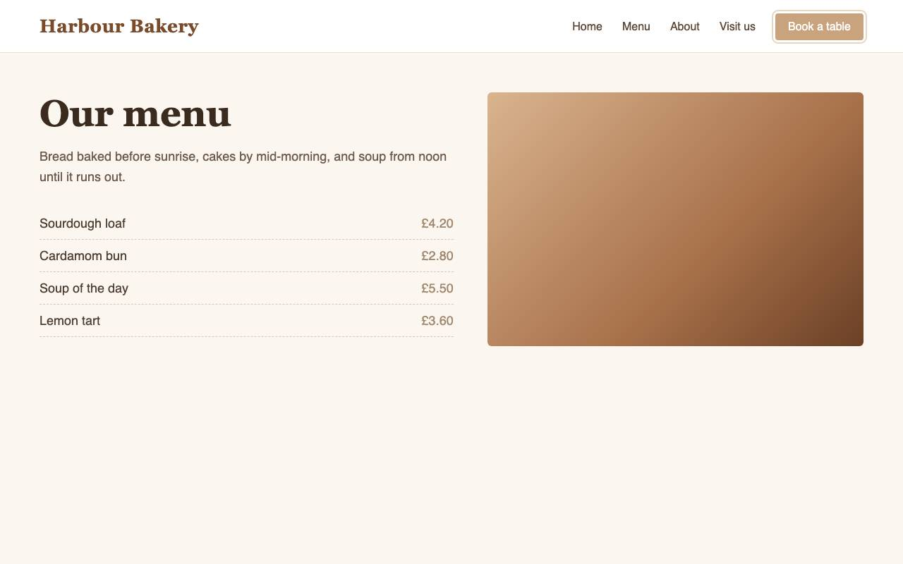

yourbusiness.com
Testing page 2 of 6: Menu
Legible loads yourbusiness.com in a real browser, checks every link, label, image and colour pair on each page, then tests it by keyboard like a person would. Most scans take 3 to 6 minutes.
Live view
What our testing agent sees as it uses your site with a keyboard. The picture changes every few seconds.

Pages
- 1HomeDone
- 2MenuTesting now
- 3AboutWaiting
- 4Visit usWaiting
- 5Book a tableWaiting
- 6GalleryWaiting
Latest steps
- 14MenuPressed Tab. Focus moved to “Book a table”. Its focus outline is faint, so we are measuring its contrast.
- 13MenuPressed Tab. Focus moved to “Visit us”.
- 12MenuViewed the page 320 pixels wide. Nothing was cut off.
- 11MenuOpened the page.
- 10HomeFinished the home page. 2 problems confirmed by measurement.
Ask about this scan
Ask our agent about what it has found so far, or what a problem means. You can ask 5 questions with this free scan.